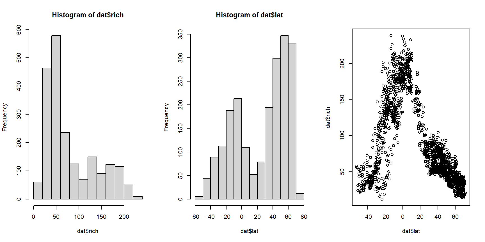

5.7 Binomial GLM for proportional data
This module explores GLMs for proportional data. Proportional data describe the number of times that some event occurs, relative to the total number of times it could occur. Many phenomena that biologists study are expressed as proportions: proportion of individuals surviving, proportion of individuals with trait A, proportion of area covered by species X, and so on. Analyzing proportions is a lot like analyzing binary outcomes; i.e., logistic regression. In fact, they are both GLMs with a binomial family. All that differs is the n term. In logistic regression the interest is in predicting the outcomes of single trials, while in binomial regression the interest is in predicting the proportion of observations in a certain state. Any dataset suitable for logistic regression can be converted to a dataset suitable for binomial regression. How you should analyze your data depends on your question:
- If the question is about outcomes at the individual observation level, then use logistic regression.
- If the question is about rates or probabilities of an event occurring, then use binomial regression.
One good clue is to consider the level at which predictor variables are measured. If many observations share the same value of a predictor variable (or the same values of many predictor variables), then binomial regression might be the right approach because the sample unit is really the group. For example, if you want to model nestling survival in birds, all of the chicks within a nest would have the same values of any predictor variable that applied to the nest. Thus, binomial regression would be appropriate. If, however, there were chick-level predictors, then logistic regression would be appropriate. Think about what level of organization your predictor and response variables occur at, and what question you are really asking.
5.7.1 Binomial GLM
Binomial regression or binomial GLM is related to logistic regression. Both are models for binary outcomes. Binary outcomes are those resulting from trials in which some event can either occur or not. When the event occurs, the trial is counted as a success. For example, if you flip a fair coin one time, that is one trial. The coin will come up heads with probability 0.5. If you flip the coin 10 times and get heads 4 times, then your observation (10 coin flips) had 10 trials (each flip) and 4 successes (times that heads came up). In logistic regression, each observation represents the outcome of one and only one trial (i.e., n = 1). In binomial regression, each observation can represent the outcome of many trials. This means that logistic regression is a special case of binomial regression.
Binary data can be represented in more than one way, so long as the number of trials and successes are known. Consider a study where researchers want to model the probability of a fish spawning in relation to environmental conditions. Their data will consist of the number of female fish in a population that spawn and the total number of female fish in the population.
- The number of trials (n) is the number of fish that could have spawned.
- The number of successes is the number of fish that spawned.
- The probability of success (p) is ratio of successes to trials; in this case, the number of spawning fish divided by the number of potential spawners.
If the same number of fish were sampled in each stream reach, then the researchers could use the number fo spawning fish as their response variable (i.e., number of successes). If the number of fish varied between observations, then they should use the proportion of spawners (p) as their response variable. Both ways of expressing the data are correct, but one may be more useful.
Binary data are usually modeled as coming from a binomial distribution. The binomial distribution describes the number of successes, or times an event occurs, in n trials with probability p in each trial. For example, if you flip a fair coin 10 times, the number of heads \(n_{heads}\) will follow the distribution:
\[n_{heads}\sim Binomial\left(10,\ 0.5\right) \]
The distribution of outcomes is shown below:

Proportional data can be expressed in two ways: as the number of successes observed out of n trials, or as the proportion of successes (i.e., p). This proportion can be thought of as the probability that a success will occur. Both ways emphasize different components of the binomial distribution that generated the data.
When analyzing proportional data, we have the option of using one of two equivalent representations of the model.
Form 1: Response variable as number of occurrences
The first form frames the model in terms of the number of successes:
\[y_i \sim Binomial\left(n_i,\ p_i\right)\]
\[logit\left(p_i\right)=\beta_0+\beta_1\]
In these equations,
- \(y_i\) is the number of trials in observation i in which some event occurs.
- \(n_i\) is the number of trials included in observation i.
- \(p_i\) is the probability of some event occurring in observation i.
- \(\beta_0\) and \(\beta_1\) are the regression intercept and slope.
The response variable \(y_i\) in this form is a non-negative integer. For example, if a toxicity trial exposes midges to 6 different concentrations of a toxin, and 20 organisms are exposed per concentration, then the number of organisms in each group that dies would be the response variable.
Form 2: Response variable as proportion of successes
The second way a binomial GLM can be expressed is in terms of the proportion of trials in which an event occurs:
\[y_i=\frac{z_i}{n_i}\]
\[z_i \sim Binomial\left(n_i,\ p_i\right)\]
\[logit\left(p_i\right)=\beta_0+\beta_1\]
In this form:
- \(y_i\) is the proportion of trials in observation i in which some event occurs.
- \(z_i\) is the number of trials in observation i in which some event occurs.
- \(n_i\) is the number of trials included in observation i.
- \(p_i\) is the probability of some event occurring in observation i.
- \(\beta_0\) and \(\beta_1\) are the regression intercept and slope.
The response variable \(y_i\) in this form is a proportion in the interval [0, 1], and represents the probability \(p_i\). For example, if a toxicity trial exposes midges to 6 different concentrations of a toxin, and 20 organisms are exposed per concentration, then the proportion of organisms in each group that dies would be the response variable.
You can think of your binomial regression model in either format. Notice that the deterministic part of the model is exactly the same in both forms of the binomial GLM, and the same as in logistic regression. The stochastic part is also the same in both forms of the binomial GLM. The stochastic part of logistic regression is usually written with the Bernoulli distribution, but could be rewritten as \(y_i \sim Binomial\left(1,\ p_i\right)\) to emphasize its status as a special case of binomial regression.
If you have proportional data, the proportion version (form 2) is more straightforward to fit in R. The regression coefficients will be the same no matter which format you use. The examples below use the proportion format.
5.7.2 Example with simulated data
The example below shows how to simulate and fit a binomial GLM on proportions. First, let’s simulate the data.
set.seed(123)
n <- 50
x <- runif(n, 0, 10)
z <- 3 + -0.75*x + rnorm(n, 0, 1)
# inverse logit
y <- round(plogis(z), 1)
# weights = sample sizes
# use same size for each observation for simplicity
wts <- rep(10, n)
# plot of a proportion (y) vs. a predictor (x)
plot(x, y)
We use GLM to fit the binomial model. The command below will specify a binomial GLM with the default logit link. In another context this is how we fit a logistic regression. Adding the argument weights, which defines the sample sizes represented by each probability (Y value) converts the model to a binomial regression. For example, an observation with Y = 0.3 and weights = 10 represents a trial or group of observations with 3 successes in 10 trials. There are other ways of specifying these weights (see ?family) but this is the simplest. Note that if you try to do this analysis without supplying weights, R will return a warning (because it expects 1s and 0s for logistic regression) and will not calculate the deviance correctly (because it doesn’t know how many trials each probability represents).
mod1 <- glm(y~x, family=binomial, weights=wts)
summary(mod1)##
## Call:
## glm(formula = y ~ x, family = binomial, weights = wts)
##
## Deviance Residuals:
## Min 1Q Median 3Q Max
## -2.8868 -0.7281 -0.2132 0.7710 2.0987
##
## Coefficients:
## Estimate Std. Error z value Pr(>|z|)
## (Intercept) 2.52369 0.26503 9.522 <2e-16 ***
## x -0.63974 0.05588 -11.449 <2e-16 ***
## ---
## Signif. codes: 0 '***' 0.001 '**' 0.01 '*' 0.05 '.' 0.1 ' ' 1
##
## (Dispersion parameter for binomial family taken to be 1)
##
## Null deviance: 288.207 on 49 degrees of freedom
## Residual deviance: 57.294 on 48 degrees of freedom
## AIC: 150.55
##
## Number of Fisher Scoring iterations: 4The parameter estimates are close to the true values and the pseudo-R2 is pretty good:
1-mod1$deviance/mod1$null.deviance## [1] 0.8012043Let’s generate predicted values and plot them in the usual way:
# values for prediction
n <- 50
px <- seq(min(x), max(x), length=n)
# calculate predictions on link scale
pred1 <- predict(mod1,
newdata=data.frame(x=px),
type="link", se.fit=TRUE)
mn1 <- pred1$fit
lo1 <- qnorm(0.025, mn1, pred1$se.fit)
up1 <- qnorm(0.975, mn1, pred1$se.fit)
# backtransform with inverse link function
mn1 <- mod1$family$linkinv(mn1)
lo1 <- mod1$family$linkinv(lo1)
up1 <- mod1$family$linkinv(up1)
# make the plot:
plot(x, y, xlab="X", ylab="Y", type="n",
ylim=c(0, 1))
points(px, lo1, type="l", lty=2, lwd=2)
points(px, up1, type="l", lty=2, lwd=2)
points(px, mn1, type="l", lwd=2)
points(x,y)
Remember that logistic regression and binomial regression are the same model. Both address a binary outcome, but at different levels. Which of the two you should use depends on the nature of your question, the way in which data were collected, and the kind of prediction you are trying to make.